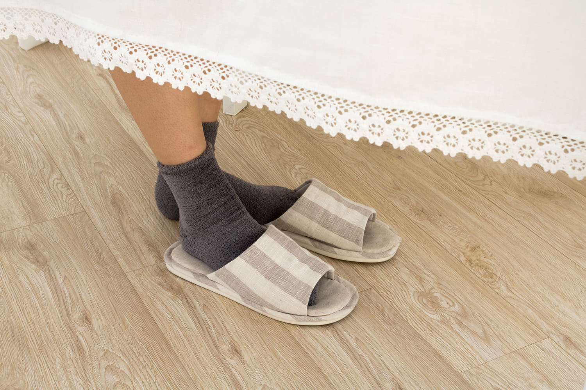
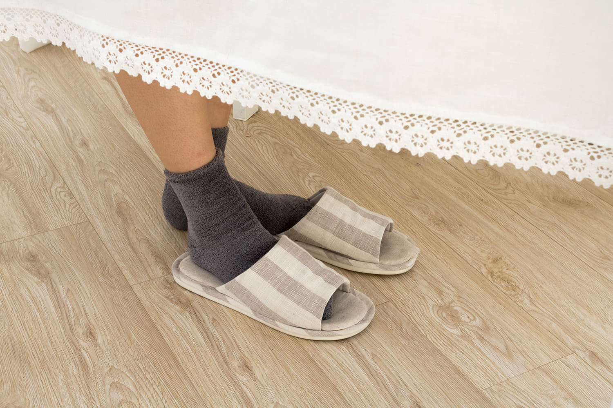

이곳은 월경 기간 패션 팁을 알려주는 곳이야. 패션후르츠 스윙에서 추천해주는 옷을 입고 훨훨 날아보자!


원하는 영상을 선택하고
보러 가기를 누르면,
패션 팁이 한가득!


Unexposed
(:노출되지 않은)
다들 외출 중에 월경과 관련된 경험이 있어?
초경을 하고 나서 본격적인 월경 라이프가 시작됐다면, 살아생전 겪어보지 못한 순간들을 생각보다 많이 마주하게 될꺼야.
예정된 다음 월경일이 찾아오지 않아 불안한 상태로 길을 걷다가 바지에 피를 보게 되는 막막한 순간이란! 버스 의자에 앉아있다가 일어서는데 물컹한 무언가가 나와 심상치 않은 느낌을 주는 아찔한 순간이란! 그런 예상치 못한 경우들 때문에 당황했을 너희들을 위해 유용한 코디 팁을 알려줄까 해.
100%의 완연한 대처를 보장하진 않더라도 멘붕에 빠진 너희들을 빠르게 구출해줄꺼야!


밝은 색상의 하의를 입은 채로 외출하다가 월경혈이 세어나오면 제대로 걷지 못할 정도로 정말 신경쓰일꺼야. 그래서 예상 월경 주기 동안만큼은 어두운 색상에, 복잡한 문양을 갖고 있는 옷을 갖고 다니면 좋아. 계절에 따라 체크 무늬 남방이나 가디건은 허리에 둘러 혈이 센 부분을 가리기에 좋아. 페이즐리 패턴처럼 단순하지 않은 패턴이 있는 반다나를 엉덩이쪽 벨트 고리에 걸어서 쓰면 난처하지 않게끔 꽤 요긴할꺼야. 간단한 포인트 역할도 해서 일석이조인 셈!
남색 체크 무늬와 나무로 된 단추의 색 대비가 매력인 체크 남방은 엠폴햄(Empolham).

검은 천과 대조되는 흰 페이즐리 패턴 반다나는 와일드브릭스(Wild bricks).


길이가 아예 엉덩이까지 덮이는 어두운 색상의 자켓도 도움이 될꺼야. 너희한테 딱 맞는 사이즈에, 엉덩이를 덮는 길이의 자켓이 없다면 두 치수 정도 크게 입는 것도 방법이야. 여기서 중요한 점은 어두운 색상이라고 꼭 검정색만 고집할 필요는 없다는 거! 남색, 고동색, 진녹색, 와인색 등 어두운 색상들은 다양하게 있으니까.


요철감이 있는 소재가 특징인 검정 블레이저 자켓은 무인양품(MUJI).

사실 월경 주기 때 짧은 치마보다는 활동하는데 더 편한 바지를 택하는 여자들이 많아. 치마를 입고 싶어도 월경 주기라 움직이는게 더 조심스럽고 혈이 셀 때 더 잘보일 것 같기 때문이지. 너희도 월경 라이프가 점차 익숙해질 즈음에는 월경 주기임에도 치마를 입고 싶다는 생각을 할 수도 있겠지? 그럴 때는 허벅지 중간까지 오는 길이의 원피스를 추천할께. 치마에 비해 허리 쪽에 불편함이 없을 뿐더러 무릎 바로 위까지의 길이는 애매하게 긴 길이이기 때문이지.
노란색 도트 무늬가 포인트인 남색 원피스는와이(Y).
플라이 니트 소재와 신개발된 에어 덕분에, 발의 피곤함을 주지않는 운동화는나이키 베이퍼맥스 퓨어플레티넘(Nike).
FILM DIRECTOR Minseo Kim(@min_estherr)
EDITOR Minseo Kim
MODEL Hayoung Kang(@prick_ly0917)
HAIR&MAKE UP Hyelim Lee(@hyedim_mi)
ASSISTANT Heejin Jo(@heeezzin_)
Stuffy Red
(:답답한 빨간색)
월경을 하면 배가 빵빵하고 다리도 잘 붓고 몸이 무겁거나 개운하지 않을 때가 종종 있을꺼야. 포궁이 있는 복부 쪽은 다른 부위보다 염증이 생기기 쉬운데, 제일 흔한 원인 중 하나는 '월경전 증후군'이 있어. 월경 전 여성의 몸에서는 프로스타글라딘 이라는 합성물질이 평소보다 적게 생성되는데, 이는 체액 저류 현상을 나타나게 해. 그래서 월경전 증후군으로 유방이나 '복부가 부어서' 특히 허리가 편한 옷을 종종 찾게 돼.
한때 심했던 월경전 증후군 때문에 옷에도 특히 신경썼던 한 고등학생을 인터뷰와 화보를 통해서 만나봤어. 월경전 증후군을 겪을 수도 있는 너희들에게 어떤 옷을 입는게 더 괜찮을지 알려줄꺼야!
간략한 자기소개 좀 해줘!
난 18살. 이름은 강하영이고 배우야.
초경했던 날 기억해?
초등학교 6학년 때인가?엄청 당황했지,
친구들한테 말로만 듣던 월경을 내가?
여름vs겨울
겨울! 여름은 너무 덥고 습해.
월경을 하고 있는 상태라면 찝찝해 죽지 아주
스타킹vs레깅스
꼭 하나 골라야 돼? 월경할 땐 답답해서 되도록이면 안 신으려 하지만 굳이 고르자면 레깅스? 근데 진짜 엄청 춥지 않은 이상 잘 안 신어. 참, 신게 되면 속바지는 꼭 입는 센스! 아랫배는 항상 따뜻해야하니까.
단추, 지퍼vs고무줄
당연히 고무줄로 된 하의지. 얼마나 편한데!
배에 압박을 주지 않아서 좋더라.
레트로한 타이포가 매력인 반팔티는 셀러비(Celebee).
플리츠 주름이 돋보이는 검정 고무줄 바지는 에디터 소장.
검정 스웨이드 소재의 신발은 반스(Vans).
스키니진vs랩스커트
랩스커트! 스키니진은 너무 딱 달라붙어서 신경쓰이고 불편해.
랩스커트는 앞치마처럼 끈으로만 허리를 조절할 수 있어서 허리랑
골반이 너무 편하더라.

노란 시어링 반팔티는 에디터 소장.
흰색과 검은색이 교차된 깅엄 체크 랩스커트는 그루비플로어(Groovyfloor).
왼편의 시어링이 특징인 셔츠는 코르카(Corca).
넣어입기vs빼서 입기
스타일에 따라 다르지만 상의는 주로 밖으로 빼서 입어.
그냥 그게 편하더라. 배에 힘 주느라 신경 안 써도 되고.
초경 소녀들에게 해주고 싶은 말 있어?
플랫 슈즈는 불편함이 딱히 없는 신발이라고 많이들 알고 있더라. 근데 월경 주기 때만큼은 비추. 나는 월경할 때 다리가 더 잘 부어서 잘 안 신게 되더라고.
FILM DIRECTOR Minseo Kim(@min_estherr)
EDITOR Minseo Kim
MODEL Hayoung Kang(@prick_ly0917)
HAIR&MAKE UP Hyelim Lee(@hyedim_mi)
ASSISTANT Bokyung Kim(@olthatjaz)

Red colod river
(:붉은 강)
월경통은 월경 주기 때 겪을 수도 있고 안 겪을 수도 있어. 우리의 몸은 스트레스와 환경 오염 등으로 인해 부정적인 영향을 받으면 긴장 상태가 돼. 특히 포궁은 몸 중에서 가장 세심하고 예민한 장기여서 큰 영향을 받게 되지. 포궁의 근육이 수축됐다가 이완이 잘 안되어 월경혈이 원활히 빠져나오지 못할수록 월경통은 심해져. 월경통의 원인은 아주 사소한 부분에서 시작되는 거 알아? 월경통의 통증 정도는 사람에 따라 다른 강도로 나타나는데, 평소에 아랫배를 차가운 상태로 내버려 두면 월경통이 심하지 않던 사람도 심해질 수도 있어. 포궁은 어떤 장기보다도 따뜻함을 유지해주어야 하는 곳이야. 몸을 따뜻하게 하는 습관은 월경혈의 배출이 원활해질 수 있도록 도와줘. 월경통이 심했던 한 십대 학생을 만나봤는데 월경통을 완화시키는데 좋은 자신만의 팁을 알려줬어. 인터뷰와 화보로 남겨놨으니 너희들에게도 도움이 되길 바래!
자기소개 좀 해줘!
내 이름은 강수빈이고, 17살 펜싱 선수야.
초경 파티 했었어?
파티 같은 건 따로 안했는데, 엄마가 생리대를 종류별로 사오셔서 이것저것 가르쳐주셨어.
중형, 대형, 오버나이트... 근데 그땐 정신 없어서 아무 것도 몰랐지.

반바지vs긴바지
당연히 긴바지. 나는 요새 조거 팬츠를 많이 입어.
발목까지 감싸줘서 따뜻하고 멋있고 편하거든!
검은색 조거팬츠는 모델 소장.
형광 계열의 색들이 조화를 이루는 테니스 운동화는 나이키(Nike).

미니스커트vs원피스
난 원피스. 월경 기간에는 몸도 마음도 편한 옷이 좋은 것 같아.
이왕이면 길이가 길고 허리 밴딩 부분이 없는 걸을 선호해.
난 골반이 주로 아픈 편이라 미니스커트는 조이는 느낌이 들어서
힘들더라고.
진한 녹색의 케시미어 티셔츠는 밀스튜디오(Mill Studio).
녹색 계열의 체크 패턴이 있는 뷔스티에 원피스는 스파오(Spao).

딸기우유를 연상케 하는 운동화는 컨버스(Converse).
아이보리색 니트는 유니클로(Uniqlo).
검은색 계열의 체크 패턴이 있는 뷔스티에 원피스는 스파오(Spao).

크롭티vs니트
크롭티도 긴 팔이 많이 나와서 좋긴 한데 그래도 난 니트.
니트는 바지말고도 긴 치마랑도 잘 어울리고 원피스로도 입을 수 있어서 유용해서 좋은 것 같아.
검은색 롱 니트는 코데즈컴바인(Codes combine).
스웨이드 소재의 베이지색 플리츠 스커트는 클라비스(Clovis).
얇은 가죽끈 악세사리는 에디터 소장.
검은색 운동화는 꼼데가르송x컨버스(Comme des garçons X Converse).
초경을 하는 친구들에게 해주고 싶은 말 있어?
나처럼 몸이 차가운 사람들은 아랫배를 따뜻하게 해주는 게 중요해.
아랫배가 차가울수록 통증이 더 심해지거든.
그래서 월경통패치가 진짜 유용해.
온찜질팩에 비하면 완전 간편하거든.
패치를 사용할 땐 맨살 말고, 팬티 위나 민소매 셔츠를 하의에 넣어 입어서 그 위에 붙여야 한다는 게 중요해.
크기는 작지만 화상을 입히는 힘은 대단하거든.
FILM DIRECTOR Minseo Kim(@min_estherr)
EDITOR Minseo Kim
MODEL Soobin Kang(@s00_qlss)
HAIR&MAKE UP Hyelim Lee(@hyedim_mi)
ASSISTANT Bokyung Kim(@olthatjaz)

Keep calm
(:편안함을 위한 편함)
외출 중에 월경을 하게 된 경우가 있다면 집에서 월경을 하는 상황도 다들 한번쯤은 경험할꺼야. 월경을 하는 우리의 몸을 위해서라 따뜻함을 유지시켜주고 몸을 꽉 조이지 않는 어두운 계열의 옷으로 되도록이면 선택해서 입는 것으로 여태까지 추천했었어. 이 점은 집에서 월경을 하게 됐을 때도 일맥상통해! 집이라고 해서 아무거나 입기는 싫은데 무엇을 입어야 할지 모른다면? 같은 색상에서 채도나 명도 차이를 주는 '톤 온 톤(Tone on tone) 코디'가 방법일 수도 있어. 집에서 입을 만한 가장 베이직한 의상들로 자연스러운 멋이 있으면서도 우리의 몸을 지켜줄 수 있는 것들로 추려봤어.

잠옷이라고 해서 꼭 상의와 바지로 분리된 옷만 입을 필요는 없지. 긴 원피스도 잠옷으로 입을 수 있어.
큼지막한 캐릭터가 반복적인 패턴으로 된 디자인의 수면 원피스 잠옷을 대부분 많이 봐왔을꺼야.
자연스러운 멋도 챙기고 싶다면 가벼운 면 소재의 심플한 디자인의 긴 원피스를 추천할께. 참, 몸을 더 따뜻하게 하기 위해선 우리에겐 수면양말은 필수 아이템이야.
이왕이면 원피스 잠옷과 어울릴만한 색상이나 비슷한 계열의 색상으로 된 것으로 꼭 챙겨 신는 센스는 잊지 말자!
남색 체크 무늬와 나무로 된 단추의 색 대비가 매력인 체크 남방은 엠폴햄(Empolham).
 

진한 회색의 수면 양말은 에디터 소장.
집에서 월경을 하게 됐을 때에도 월경혈이 조금이라도 세는 상황을 몇 번 경험할 수도 있을꺼야.그럴 땐 어두운 색상의 바지를 많이 찾지만 어두운 색상이라고 검은색만 있는 것은 아니야! 짙은 카키색, 와인색 등 어두운 색상은 검은색 말고도 다양하게 있어.바지가 심플한 디자인이라면 상의는 엉덩이를 덮는 기장의 비교적 복잡한 패턴이 있는 맨투맨이나 단순한 맨투맨도 잘 어울려. 굳이 가디건 말고도 테디베어 조끼도 같이 입으면 따뜻함은 물론이고 귀엽기까지!
안경줄이 달린 은색 안경은 에디터 소장.
스트라이프 맨투맨은 유니클로(Uniqlo).
테디베어 조끼는 스파오(Spao).
짙은 카키색 바지는미쳐라(Michyeora).
양말은유니클로(Uniqlo).
발바닥 면의 체크페턴 디자인이 포인트인 실내화는모던하우스(Modern house).


잠자려고 누웠을 때 월경혈의 양이 많아 잠옷에 묻을까봐 걱정이라면
팬티형 오버나이트를 입고 자는 것도 방법이지만, 남색과 같은 어두운 색상에 복잡한 패턴이 있는 잠옷을
선택하는 것도 방법이야. 약간의 방수 기능이 있는 소재라면 Perfect!
모델이 들고 있는 제품 좋은느낌: 입는 오버나이트.
남색과 빨간색 도트 문양이 조화로운 방수 소재의 잠옷은에블린(EBLIN).


짙은 노랜색 양말은 에디터 소장.
집에서도 입을 수 있고 밖에서도 입을 수 있는 부담없는 파자마 룩인 위 브랜드의 세트 잠옷과 같은 스타일도 있어. 짙은 버건디 색상의 스트라이프 바지가 포인트인데, 혈이 조금 셌을 때 크게 티가 나지 않게 하기 위한 팁이 될 수 있어. 그래도 혈이 새는 것에 대한 걱정 아직 있다면 자기 전에 누울 자리에 담요나 수건을 까는 것도 방법이야. 그리고 우리한텐 따뜻함을 유지하기 위한 수면양말이나 양말이 중요한데 만약에 답답해서 싫다면 덧신이 더 나을 수도 있어.
회색 상의와 버건디 하의로 구성된 세트 잠옷은 애니바디(Anybody).

누드 페이크 삭스 덧신은비너스(Venus).


우리의 몸과 마음은 매일 변화하는 호르몬 균형의 영향을 받아. 그래서 향은 신경을 강화해주고 불쾌한 증상을 완화시켜줘서 종종 향을 피워주는 것이 매우 유용해. 특히 클라리세이지라는 꽃의 향이 담긴 향은 월경 전 또는 호르몬 균형이 깨졌을 때 불규칙한 월경 주기를 바로잡는 작용을 해줘. 스파이시하면서도 달콤하며, 파우더 계열의 느낌을 주는 차분한 향이야. 심한 월경통이 있는 월경 2~3일째에는 혈의 양이 평소보다 약간 많아질 수도 있지만 라벤더나 장미향도 같이 피워준다면 혈액순환을 촉진해서 몸을 따뜻하게 해줘서 더 좋은 효과를 발휘할 수 있어. 하지만 어떤 일에 집중을 해야하거나 호르몬 치료를 받는다거나 어른이 돼서 임신했을 때 사용하는 것은 삼가는게 좋아.
클라리세이지 향은인센스월드.
FILM DIRECTOR Minseo Kim(@min_estherr)
EDITOR Minseo Kim
MODEL Soobin Kang(@s00_qlss)
HAIR&MAKE UP Hyelim Lee(@hyedim_mi)
ASSISTANT Bokyung Kim(@olthatjaz)